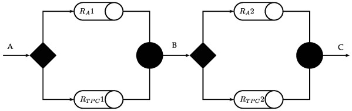
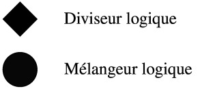
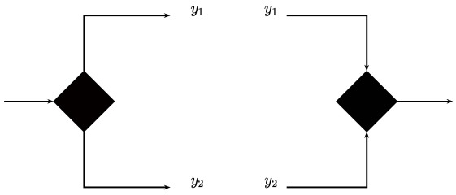
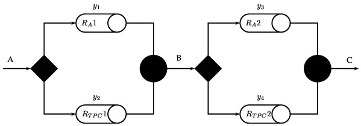
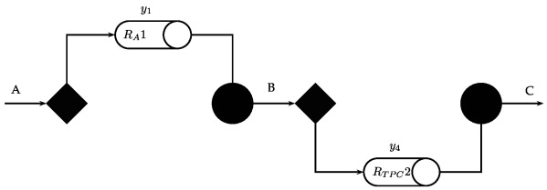
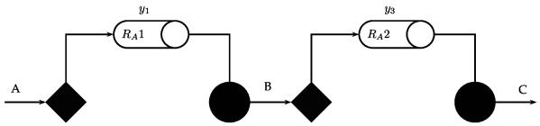
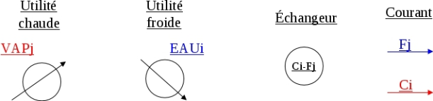

Superstructure
La superstructure regroupe l'ensemble des schémas de procédé candidats, résultant des alternatives structurelles, parmi lesquels sera choisi le procédé optimal.
Exemple :
Soit à synthétiser un produit \(C\) dans un procédé mettant en oeuvre deux réactions consécutives :
\(A\Rightarrow B\) et \(B\Rightarrow C\)
A chaque étape, l’alternative suivante s'offre à nous :
Réacteur adiabatique (\(R_{A}\)) ou à température constante aux parois (\(R_{TPC}\))


Rappel : Variables topologiques (binaires)

\(y_i=1 \rightarrow\) le courant et les unités associées existent
\(y_i=0\rightarrow\) le courant et les unités associées n'existent pas
Exemple :

Alternative 1 :\(y=(1001)^T\)

Alternative 2 : \(y=(1010)^T\)

Définition : Hypothèses
Échange adiabatique
Échange à contre courant
Pas de division des courants
Interdiction de refroidir (resp. réchauffer) un courant froid (resp. chaud)
Couplage avec les utilités en fin de réseau uniquement
Un couplage unique entre deux courants
Conseil :
